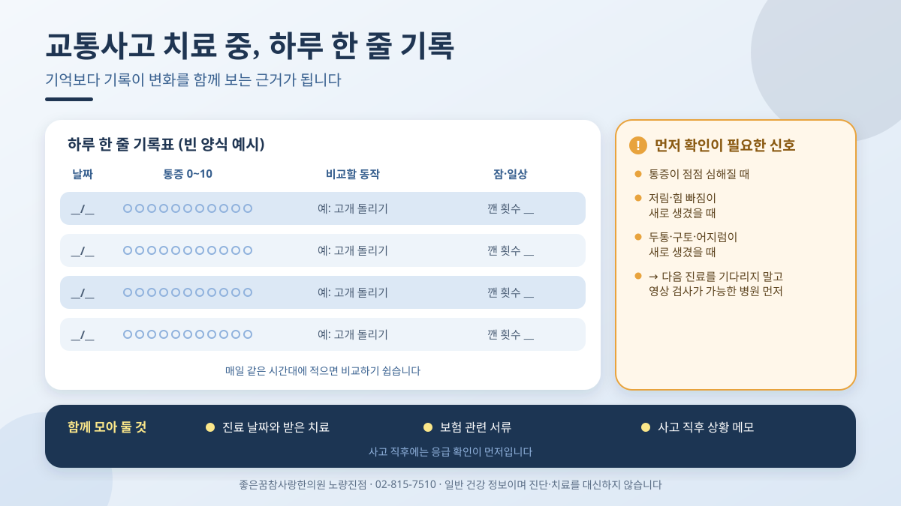

이종호 한의사 감수좋은꿈참사랑한의원 대표원장 (한의사 면허번호 19769)발행 2026-11-23 · 수정 2026-11-26
이 글의 차례
- 왜 기록이 도움이 될까요
- 하루 한 줄, 이렇게 적어 보세요
- 비교할 동작은 어떻게 고르나요?
- 왜 사고 직후 며칠의 기록이 특히 중요할까요?
- 먼저 이렇게 여쭙니다
- 통증 말고 무엇을 함께 적으면 좋을까요?
- 스스로 점검해 보세요
- 일상에서 먼저 해 볼 수 있는 것
- 예를 들면 이런 경우입니다
- 기록이 들쭉날쭉하면 어떻게 보나요?
- 기록할 때 피하면 좋은 것
- 일터나 학교에서 지낸 시간도 함께 적어 주세요
- 기록을 빠뜨린 날이 있어도 괜찮을까요?
- 한의원에서 함께 살필 수 있는 경우
- 처음 오시는 날 챙겨 오시면 좋은 것
- 가족이 함께 사고를 겪었다면
- 기록이 마음을 다독여 주기도 합니다
- 기록을 보고 방법을 어떻게 정하나요?
- 휴대폰으로 쉽게 남기는 방법
- 얼마나 지켜보고, 언제 다시 상담할까요?
- 진료를 마친 뒤에도 기록이 쓸모 있을까요?
- 이렇게 기록해 오시면 상담이 쉬워집니다
- 이런 증상은 먼저 확인이 필요합니다
교통사고 치료 중에는 날짜별 통증 정도(0~10), 가장 불편한 동작 한 가지, 잠과 일상의 지장을 짧게 적어 두는 것만으로도 변화를 함께 보기가 훨씬 쉬워집니다. 기억만으로는 처음보다 얼마나 달라졌는지 헷갈리기 쉬워, 간단한 기록이 진료 방향을 정하는 근거가 됩니다.
교통사고 뒤에는 통증 말고도 신경 쓸 일이 많습니다. 보험사와 통화하고, 차를 맡기고, 일정을 다시 짜다 보면 몸이 어땠는지는 뒤로 밀리기 쉽습니다. 그래서 저는 처음 오신 분께 길게 쓰지 말고 하루 한 줄만 적어 달라고 부탁드립니다.
왜 기록이 도움이 될까요
- 통증은 날씨, 잠, 업무량에 따라 하루하루 달라져 기억만으로는 흐름을 알기 어렵습니다.
- 같은 동작으로 비교하면 변화가 작더라도 알아차리기 쉽습니다.
- 잠이나 업무 지장처럼 통증 말고 생활의 변화도 회복의 신호가 됩니다.
- 진료 날짜와 받은 치료를 적어 두면 방법을 조정할 때 참고가 됩니다.
- 사고 직후의 상황과 첫 통증은 시간이 지나면 기억이 흐려지기 쉬워 빨리 적어 둘수록 좋습니다.
하루 한 줄, 이렇게 적어 보세요
기록은 길 필요가 없습니다. 날짜, 통증 점수, 오늘 가장 불편했던 동작, 그리고 생활에서 달라진 점 한 가지면 충분합니다. 예를 들면 '11월 24일, 5점, 고개 왼쪽 돌리기 불편, 밤에 두 번 깸'처럼 한 줄로 적습니다.
통증 점수는 0이 전혀 아프지 않은 상태, 10이 상상할 수 있는 가장 심한 통증입니다. 숫자가 정확하지 않아도 괜찮습니다. 중요한 것은 매일 같은 기준으로 매기는 것이라, 아침에 일어나서처럼 적는 때를 정해 두면 비교하기 쉬워집니다.
진료받은 날에는 그 줄 끝에 '진료'라고만 덧붙여 두세요. 진료 다음 날 기록과 나란히 놓고 보면, 치료 뒤 몸이 어떻게 반응했는지 흐름이 드러납니다.
비교할 동작은 어떻게 고르나요?
가장 불편한 동작 가운데 매일 쉽게 해 볼 수 있는 것을 하나 고르세요. 목이 불편하다면 고개를 좌우로 돌리기, 허리가 불편하다면 세수할 때 허리 숙이기, 어깨라면 선반 위 물건 집기처럼 일상 속 동작이 좋습니다.
처음 진료 때 함께 정해도 됩니다. 저는 진찰하면서 어떤 동작에서 불편이 뚜렷한지 살펴보고, 집에서도 같은 방법으로 해 볼 수 있는 동작을 함께 골라 드립니다. 한 번 정한 동작은 될 수 있는 대로 바꾸지 않고 계속 같은 동작으로 비교합니다. 그래야 몇 주 뒤에도 처음과 나란히 놓고 볼 수 있습니다.
동작을 해 볼 때는 아픈 걸 참고 끝까지 밀어붙이지 마세요. 불편이 시작되는 지점까지만 해 보고 '어디쯤에서 아팠는지'를 적으면 됩니다. 예를 들어 '고개를 반쯤 돌리면 당김'처럼 적어 두면 다음에 그 지점이 넓어졌는지 알 수 있습니다.
왜 사고 직후 며칠의 기록이 특히 중요할까요?
사고 직후에는 긴장한 상태라 통증을 덜 느끼다가, 하루 이틀 지나 뻐근함이 올라오는 경우가 많습니다. 이 시기의 변화는 빠르고, 시간이 지나면 언제 어디부터 아프기 시작했는지 기억이 섞이기 쉽습니다.
처음 며칠의 기록은 나중에 회복의 흐름을 볼 때 기준점이 됩니다. 처음에 어느 동작이 얼마나 불편했는지 적어 두어야, 몇 주 뒤 '그때보다 이만큼 편해졌다'는 것을 숫자로 함께 확인할 수 있습니다.
사고 순간의 모습도 기억이 또렷할 때 적어 두세요. 앉은 자리, 안전벨트를 했는지, 충격이 어느 쪽에서 왔는지, 그 순간 어디를 보고 있었는지는 처음 진찰할 때 살필 자리를 정하는 데 쓰입니다.
먼저 이렇게 여쭙니다
- 가장 불편한 동작은 무엇인가요?
- 하루 중 언제 가장 아픈가요?
- 일이나 집안일에 지장이 있나요?
- 잠은 어떠신가요?
- 치료 뒤 어떤 동작이 달라졌다고 느끼셨나요?
통증 말고 무엇을 함께 적으면 좋을까요?
- 잠: 잠든 시각, 밤에 깬 횟수, 아침에 개운했는지
- 일과 집안일: 오늘 하지 못했거나 미룬 일이 있었는지
- 마음: 차를 탈 때 긴장했는지, 사고 장면이 떠올랐는지
- 약: 진통제 등 드신 약의 이름과 시각
- 그날의 일정: 오래 앉아 있었는지, 무거운 것을 들었는지
모든 항목을 매일 채울 필요는 없습니다. 그날 눈에 띈 것만 한두 단어로 적어도 됩니다. 이런 생활의 변화는 통증 점수만으로는 보이지 않는 회복의 흐름을 알려 줍니다.
스스로 점검해 보세요
- 지난주보다 이번 주가 편한지 묻는 말에 바로 답하기 어렵다
- 날마다 아픈 곳이 조금씩 달라 설명하기 헷갈린다
- 진통제를 언제 얼마나 먹었는지 기억나지 않는다
- 사고 뒤 잠이 달라졌는데 언제부터였는지 모르겠다
- 다른 병원과 한의원 진료 날짜가 섞여 헷갈린다
하나라도 해당한다면 오늘부터 한 줄 기록을 시작해 보세요. 사흘만 모여도 진료 때 이야기가 훨씬 구체적이 됩니다.
일상에서 먼저 해 볼 수 있는 것
- 통증을 0~10 숫자로 하루 한 번 적기
- 불편한 동작 한 가지를 정해 매주 확인하기
- 진료 날짜와 받은 치료 메모하기
- 보험 관련 서류를 한곳에 모아 두기
- 기록은 매일 같은 시간대에 적어 비교하기 쉽게 하기
예를 들면 이런 경우입니다
- 예를 들어 야근이 잦은 직장인이 퇴근할 때마다 목이 뻐근하다면, 아침과 퇴근 직후 두 번 점수를 적어 보세요. 하루 중 언제 불편이 커지는지 보이면 일하는 자세까지 함께 살필 수 있습니다.
- 예를 들어 아이를 키우는 분이 아이를 안아 올릴 때 허리가 시큰하다면, '아이 안기'를 비교 동작으로 정하고 그날 아이를 몇 번쯤 안았는지 덧붙여 적어 두면 좋습니다.
- 예를 들어 스스로 적기 어려워하시는 어르신이라면, 가족이 저녁에 '오늘은 몇 점이었어요?' 하고 여쭤 대신 적어 드려도 충분합니다.
기록이 들쭉날쭉하면 어떻게 보나요?
통증은 하루하루 오르내리는 것이 자연스럽습니다. 어제 3점이었다가 오늘 6점이 되었다고 해서 처음으로 돌아간 것은 아닐 수 있습니다. 비가 오거나 잠을 설친 날, 오래 앉아 있었던 날에는 점수가 올라가기도 합니다.
그래서 저는 하루 점수보다 한 주 동안의 흐름을 봅니다. 점수가 높았던 날 무엇을 했는지 함께 짚어 보면, 피하면 좋을 상황이나 자세가 보이기도 합니다. 들쭉날쭉한 기록도 그 자체로 의미 있는 자료입니다.
점수가 갑자기 높아진 날에는 그 옆에 짧게 이유를 추측해 적어 보세요. '이사 짐 정리', '밤샘 근무', '비 오는 날'처럼 한두 단어면 됩니다. 맞는 추측이 아니어도 괜찮습니다. 진료 때 그 메모를 실마리로 함께 이야기하다 보면, 몸이 무엇에 예민하게 반응하는지 조금씩 보이기 시작합니다.
기록할 때 피하면 좋은 것
통증을 확인하려고 아픈 동작을 하루에 몇십 번씩 반복해 보는 것은 피해 주세요. 확인하는 일 자체가 그 부위에 부담이 될 수 있습니다. 하루에 한 번, 정해 둔 때에 한두 번만 해 보면 충분합니다.
날마다 비교하는 동작을 바꾸는 것도 흐름을 흐리게 합니다. 오늘은 고개 돌리기, 내일은 허리 숙이기처럼 바뀌면 점수가 오르내려도 무엇이 달라졌는지 알기 어렵습니다. 새로 불편한 동작이 생겼다면 원래 동작은 그대로 두고 따로 한 줄 덧붙여 주세요.
일터나 학교에서 지낸 시간도 함께 적어 주세요
하루 중 대부분을 보내는 곳에서의 자세는 통증에 큰 영향을 줍니다. 몇 시간쯤 앉아 있었는지, 서서 일했는지, 무거운 것을 옮겼는지를 짧게 적어 두면 점수가 오른 날의 이유를 함께 찾기 쉽습니다.
예를 들어 '회의 4시간, 쉬는 시간 거의 없음'이나 '독서실 6시간'처럼 적으면 충분합니다. 이런 메모가 쌓이면 어떤 날 몸이 더 지치는지 스스로도 알아차리게 되고, 생활에서 바꿀 수 있는 것이 무엇인지 함께 정리할 수 있습니다.
기록을 빠뜨린 날이 있어도 괜찮을까요?
괜찮습니다. 바쁜 날 하루 이틀 빠진다고 기록이 쓸모없어지지 않습니다. 생각났을 때 다시 이어서 적으면 되고, 빠진 날은 '기억나지 않음'이라고 두셔도 충분합니다.
기록을 지키느라 스트레스를 받는다면 오히려 주객이 바뀐 셈입니다. 매일이 어렵다면 진료 전날 저녁에 그 사이 며칠을 떠올려 몇 줄만 적어 오셔도 좋습니다.
한의원에서 함께 살필 수 있는 경우
- 치료 중 통증 변화가 헷갈리는 경우 기록을 보며 같은 동작으로 다시 확인합니다.
- 변화가 적으면 방법을 조정하고 필요하면 다른 의료기관을 안내합니다.
- 생활 불편이 남는 경우 잠과 일상 리듬도 함께 살핍니다.
좋은꿈참사랑한의원에서는 매 진료 때 기록을 함께 보며 같은 동작으로 다시 확인하고, 변화에 따라 침·약침·추나·온열 등의 방법과 간격을 조정합니다. 변화가 적으면 다른 방법을 검토하고 필요하면 다른 의료기관을 안내하며, 귀가 전에는 다음까지 지켜볼 점을 알려 드립니다.
처음 오시는 날 챙겨 오시면 좋은 것
- 사고 날짜와 시간, 사고 순간의 상황을 적은 메모
- 다른 병원에서 받은 검사 결과지와 처방받은 약 이름
- 지금까지 적어 둔 통증 기록(없으면 기억나는 만큼)
- 보험 접수 번호 등 사고 관련 정보
처음부터 모두 갖추지 못해도 괜찮습니다. 챙기지 못한 것은 다음 진료 때 가져오셔도 되고, 자동차보험 접수 절차와 필요한 서류는 방문 전 전화로 확인해 주세요.
가족이 함께 사고를 겪었다면
같은 차에 타고 있었어도 앉은 자리와 몸 상태가 달라 아픈 곳과 시작된 때가 사람마다 다릅니다. 그래서 기록도 한 사람씩 따로 남겨 두시길 권합니다. 한 노트에 적더라도 이름을 앞에 붙여 구분하면 헷갈리지 않습니다.
아이는 아픈 정도를 숫자로 말하기 어려워합니다. 이럴 때는 '오늘 잘 놀았는지, 잘 먹고 잘 잤는지'를 보호자가 대신 적어 주세요. 평소와 다르게 보채거나 잠을 설친다면 소아청소년과에서 먼저 확인받으세요.
기록이 마음을 다독여 주기도 합니다
사고 뒤에는 '언제쯤 예전처럼 될까' 하는 걱정이 커지기 쉽습니다. 아픈 날만 기억에 남아 하나도 달라지지 않은 것처럼 느껴질 때, 지난 기록을 넘겨 보면 생각보다 편해진 날이 늘었다는 것을 발견하기도 합니다.
반대로 정말 제자리라면 그것도 기록이 알려 줍니다. 혼자 막연히 불안해하기보다, 기록을 가지고 와서 함께 보며 다음 방법을 정하는 편이 마음이 한결 가볍습니다.
기록을 보고 방법을 어떻게 정하나요?
기록에서 같은 동작의 점수가 꾸준히 내려가고 생활의 지장도 줄고 있다면, 지금의 방법을 이어 가면서 방문 간격을 조금씩 넓혀 갑니다. 반대로 몇 주가 지나도 흐름이 제자리라면 같은 방법을 고집하지 않고 다시 검토합니다.
특정 시간대나 상황에서만 점수가 오른다면 그 생활 습관부터 함께 살펴봅니다. 예를 들어 오래 운전한 날마다 허리 점수가 오른다면, 앉는 자세와 쉬는 간격을 함께 정하는 식입니다.
휴대폰으로 쉽게 남기는 방법
- 메모 앱에 '사고 기록' 노트를 하나 만들어 매일 한 줄씩 이어 쓰기
- 달력 앱의 그날 칸에 점수만 적어 두기
- 잠들기 전 알림을 맞춰 두고, 알림이 울리면 점수를 적기
- 진료받은 날은 달력에 표시해 두기
어떤 방법이든 손에 익은 것이 가장 오래갑니다. 종이 수첩이 편하다면 그것도 좋습니다. 진료 때 그 화면이나 수첩을 그대로 보여 주시면 됩니다. 따로 옮겨 적거나 깔끔하게 정리해 오실 필요는 전혀 없습니다. 적어 둔 그대로가 가장 좋은 자료입니다.
얼마나 지켜보고, 언제 다시 상담할까요?
기록을 시작하고 일주일쯤 지나면 흐름이 조금씩 보입니다. 점수가 서서히 내려간다면 지금처럼 지켜보시면 되고, 흐름이 잘 읽히지 않는다면 다음 진료 때 기록을 함께 넘겨 보며 이야기 나눠요.
몇 주 동안 기록이 제자리라면 그 기록을 가지고 오셔서 함께 이야기해요. 방법을 바꾸거나, 필요하다고 판단되면 다른 의료기관의 검사를 안내해 드립니다.
진료를 마친 뒤에도 기록이 쓸모 있을까요?
진료를 마치고 일상으로 돌아간 뒤에도 몇 주 동안은 일주일에 한두 번만이라도 점수를 적어 두시길 권합니다. 날씨가 추워지거나 일이 몰리는 시기에 예전 부위가 다시 뻐근해지는 분이 있는데, 그때 기록이 있으면 무엇이 계기가 되었는지 짚어 보기 쉽습니다.
다시 불편해져 오시게 되더라도 이전 기록을 가지고 오시면 처음부터 다시 설명하실 필요가 없습니다. 지난번 어디가 얼마나 불편했고 무엇이 도움이 되었는지를 바로 이어서 볼 수 있습니다.
기록 노트는 지우지 말고 그대로 두세요. 몇 달 뒤 다시 펼쳐 보면, 그때 몸이 어떻게 지나왔는지 스스로 돌아보는 데도 도움이 됩니다.
이렇게 기록해 오시면 상담이 쉬워집니다
- 날짜별 통증 정도(0~10)
- 비교할 동작 한 가지(예: 고개 돌리기, 허리 숙이기)
- 잠든 시간과 밤에 깬 횟수
- 진료 날짜와 받은 치료, 보험 관련 서류
이런 증상은 먼저 확인이 필요합니다
- 통증이 점점 심해지는 경우
- 저림이나 힘 빠짐이 새로 생긴 경우
이런 신호가 있으면 한의원보다 가까운 병원이나 응급실을 먼저 찾으세요.

여쭙는 것
- 가장 불편한 동작은 무엇인가요?
- 하루 중 언제 가장 아픈가요?
- 일이나 집안일에 지장이 있나요?
생활에서 해 볼 것
- 통증을 0~10 숫자로 하루 한 번 적기
- 불편한 동작 한 가지를 정해 매주 확인하기
- 진료 날짜와 받은 치료 메모하기
한의원에서 함께 살필 것
- 치료 중 통증 변화가 헷갈리는 경우 기록을 보며 같은 동작으로 다시 확인합니다.
- 변화가 적으면 방법을 조정하고 필요하면 다른 의료기관을 안내합니다.
- 생활 불편이 남는 경우 잠과 일상 리듬도 함께 살핍니다.
먼저 확인이 필요한 신호
- 통증이 점점 심해지는 경우
- 저림이나 힘 빠짐이 새로 생긴 경우
한눈에 보는 표
| 구분 | 핵심 |
|---|---|
| 여쭙는 것 | 가장 불편한 동작은 무엇인가요? 하루 중 언제 가장 아픈가요? |
| 생활에서 해 볼 것 | 통증을 0~10 숫자로 하루 한 번 적기 불편한 동작 한 가지를 정해 매주 확인하기 |
| 한의원에서 함께 살필 것 | 치료 중 통증 변화가 헷갈리는 경우 기록을 보며 같은 동작으로 다시 확인합니다. 변화가 적으면 방법을 조정하고 필요하면 다른 의료기관을 안내합니다. |
| 먼저 확인이 필요한 신호 | 통증이 점점 심해지는 경우 저림이나 힘 빠짐이 새로 생긴 경우 |
자주 묻는 질문
기록은 꼭 해야 하나요?
꼭은 아니지만, 간단한 기록이 있으면 변화를 함께 보기 쉬워집니다.
휴대폰 메모도 괜찮나요?
네. 편한 방법이면 충분합니다.
진료 시간은 어떻게 되나요?
평일은 09:30~20:00(점심 13:00~14:00), 토·일·공휴일은 09:30~15:00(점심시간 없음)에 진료합니다.
이 기록을 보험 서류로 써도 되나요?
보험 관련 서류는 보험사와 의료기관에서 발급하는 것을 따르시고, 개인 기록은 진료 때 변화를 함께 보는 참고 자료로 써 주세요.
좋은꿈참사랑한의원은 재진 때 지난번 이야기부터 이어서 여쭙니다. 진료시간과 예약은 오시는 길에서 확인하세요.
어디서 상담받을 수 있나요?
좋은꿈참사랑한의원은 서울 동작구 만양로2길 2 신성빌딩 3층·5층(서울 동작구 상도동, 7호선 상도역 3번 출구 근처)에 있습니다. 한의사 3명(이종호 대표원장, 조영기 수석진료원장, 정원영 진료원장)이 진료합니다. 진료시간은 평일 09:30~20:00(점심 13:00~14:00), 토·일·공휴일 09:30~15:00이며, 방문 전 전화로 확인을 권합니다. 예약은 네이버 예약, 카카오톡 상담, 전화 02-815-7510로 받습니다.
이 글은 일반적인 건강 정보이며 개인의 진단이나 치료를 대신하지 않습니다. 증상이 있거나 복용 중인 약이 있다면 진료를 통해 확인하세요. 치료 효과는 개인마다 다를 수 있습니다.
작성 기준: 일반적으로 알려져 있는 건강 정보를 참고해 정리했습니다(대표원장 감수). 증상 기록은 1~2주 동안 하루 1회, 비슷한 시간에 적어 오시면 지난 상태와 비교하기 쉽습니다.